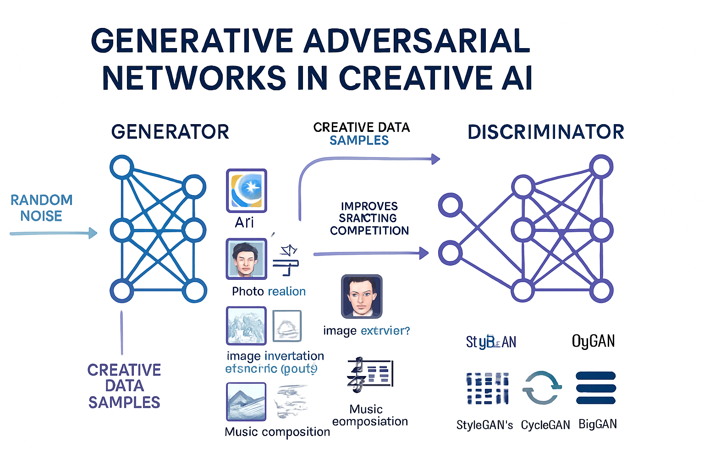

Generative Adversarial Networks (GANs) in Creative AI

Generative Adversarial Networks (GANs) represent a groundbreaking approach in artificial intelligence, primarily used for generating new data that resembles a given training dataset. They are particularly powerful in creative AI applications, pushing the boundaries of what machines can create.
How GANs Work: The Adversarial Process
GANs operate on a unique adversarial principle, involving two neural networks that compete against each other:
- Generator: This network is responsible for producing new data samples (e.g., images, music, text) from random noise. Its goal is to create data that is indistinguishable from real data.
- Discriminator: This network acts as a critic, evaluating whether a given data sample is real (from the training set) or fake (generated by the generator). Its goal is to accurately distinguish between real and generated data.
Through this continuous competition, both networks improve over time. The generator learns to create increasingly realistic data to fool the discriminator, while the discriminator becomes better at detecting subtle flaws in the generated data. This iterative process leads to the generation of highly convincing and novel outputs.
Creative Applications
The power of GANs has unlocked numerous creative possibilities across various domains:
- Art Generation: Creating unique and novel artworks, often in specific styles.
- Photo Realism: Generating highly realistic images of faces, landscapes, and objects that are difficult to distinguish from real photographs.
- Style Transfer: Applying the artistic style of one image to the content of another.
- Image-to-Image Translation: Transforming images from one domain to another (e.g., converting sketches to photorealistic images, day to night scenes).
- Music Composition: Generating new musical pieces in various genres.
Notable Models
Several advanced GAN architectures have emerged, each contributing to the field's rapid progress:
- StyleGAN2 & StyleGAN3: Developed by NVIDIA, these models are renowned for their ability to generate incredibly high-resolution and controllable photorealistic images, particularly human faces.
- CycleGAN: This model enables image-to-image translation without paired training data, allowing for tasks like converting horses to zebras or summer landscapes to winter scenes.
- BigGAN: Known for generating diverse and high-fidelity images across a wide range of categories.
GANs continue to be a vibrant area of research, with ongoing advancements in stability, control, and diversity of generated outputs. Their potential to revolutionize creative industries and beyond is immense, promising a future where AI plays an even larger role in artistic expression and content creation.